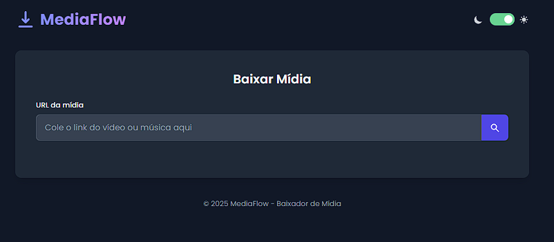
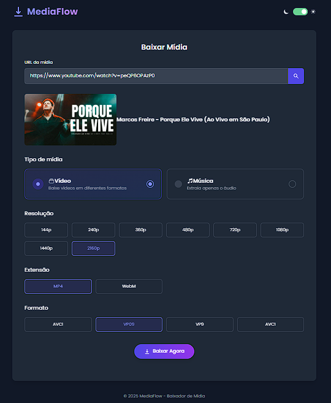
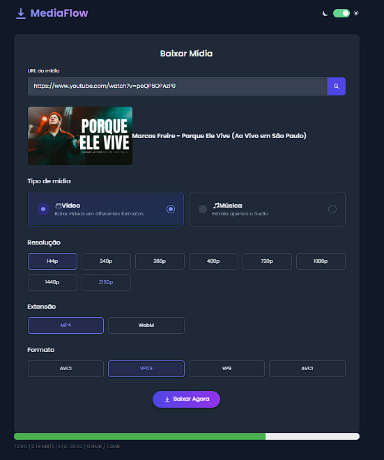

Meus Projetos

E-commerce (Projeto Integrador UNIFEB)
Fui o principal desenvolvedor neste projeto acadêmico de uma plataforma de e-commerce completa, focada em um catálogo digital interativo.
Minhas Contribuições:
- Backend com Django REST Framework (Python): Desenvolvimento de APIs para CRUD de produtos, categorias, carrinho, autenticação de usuários e sistema de avaliação.
- Frontend com JavaScript (Node.js): Criação da interface responsiva e interativa, consumo das APIs e manipulação de dados para exibição e interação do usuário.
- Conceitos de POO e Git/GitHub: Aplicação de princípios de Programação Orientada a Objetos e gestão de código em equipe.
- Deploy e Banco de Dados: Configuração e deploy em PythonAnywhere (backend) e Render (frontend), utilizando MySQL.
Python
Django REST Framework
JavaScript
Node.js
MySQL
HTML
CSS
Git



MediaFlow (Pessoal)
Um projeto pessoal criado para resolver um problema cotidiano: baixar vídeos e músicas do YouTube de forma rápida e sem interrupções.
Minhas Contribuições:
- Interface Web Interativa: Desenvolvida com HTML, Tailwind CSS e JavaScript, priorizando a usabilidade e o design.
- Backend com Django e yt-dlp: Integração eficiente com Python e a biblioteca `yt-dlp` para o processamento de downloads de mídia.
- Versão Desktop com Tkinter: Criação de uma aplicação desktop utilizando Tkinter para uma experiência de download ainda mais rápida.
- Ciclo Completo de Desenvolvimento: Responsável por todas as etapas, desde a idealização do design (inspirado no Canva) até a implementação e otimização.
Python
Django
yt-dlp
JavaScript
HTML
Tailwind CSS
Tkinter

